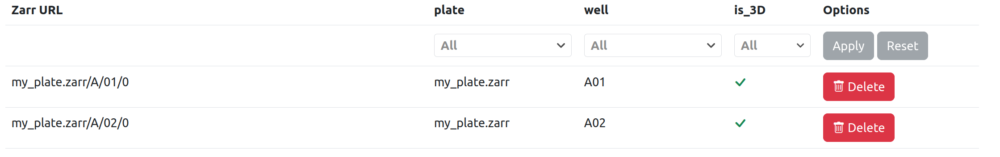
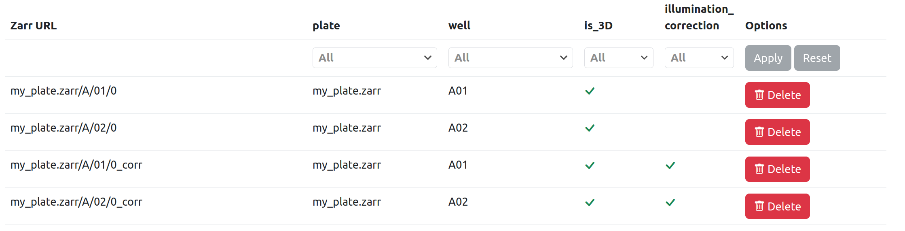
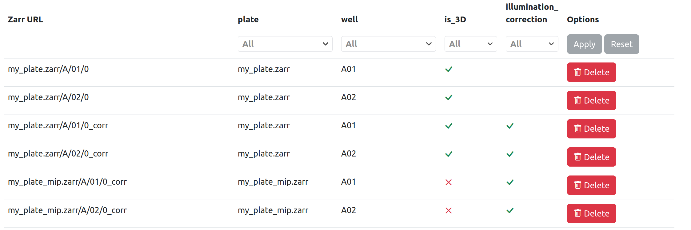

Fractal Image List¶
While applying a processing workflow to a given dataset, Fractal keeps a list of all the OME-Zarr images it is processing and their metadata. In this page we describe the concepts of images and filters - see also the examples section.
Images¶
Each entry in the image list is defined by a unique zarr_url property (the full path to the OME-Zarr image), and it may also include image types and image attributes.
Image types¶
Image types are boolean properties that allow to split the image list into different sub-lists (e.g. the is_3D type for 3D/2D images, or the illumination_corrected type for raw/corrected images when illumination correction was not run in-place). Types can be set both through the task manifest (e.g. after an MIP task, the resulting images always have the type is_3D set to False) as well as from within an individual task (see task-API/output section).
Note: when applying filters to the image list, the absence of a type corresponds to false by default.
Image attributes¶
Image attributes are scalar properties (strings, integers, floats or booleans). They are always defined from within individual tasks, and never by the task manifest. They allow selecting subsets of your data (e.g. select a given well, a given plate or a given multiplexing acquisition).
Fractal server uses the image list combined with filters (see below) to provide the right image URLs to each task during execution.
Filters¶
Before running a given task, Fractal prepares an appropriate image list by extracting the images that match with a given set of filters. Filters can refer both to image types or image attributes and they may come from different sources.
Type filters¶
Input filters¶
The set of type filters to be applied before running a task is obtained by combining these sources:
- The dataset may have
type_filtersset - this is the source with lowest priority.- Example: A prior workflow ran and set output filters of
type_filters = {"is_3D": False}". These output filters were added to the dataset when the prior workflow finished. - Example: I manually set
type_filters = {"illumination_corrected": False}"through Fractal, by modifying the dataset, because I want to process raw images.
- Example: A prior workflow ran and set output filters of
- The manifest of a tasks package may specify that a task has some required
input_types, which are used as filters.- Example: An "Project Image (HCS Plate)" task with
input_types={"is_3D": True}, meaning that it cannot run on images with typeis_3D=False. - Example: An "Illumination correction" task with
input_types={"illumination_corrected": False}, meaning that it cannot run on images with typeillumination_correction=True. - Example: An "Apply Registration to Image" task with
input_types={"registered": False}, meaning that it cannot run on images with typeregistered=True.
- Example: An "Project Image (HCS Plate)" task with
- For a task within a workflow, it is possible to specify some additional
type_filters.- Example: I may need a workflow that includes a 3D->2D projection task but then switches back to 3D images in a later task. I can achieve this by setting
type_filters = {"is_3D": True}for the relevant task, so that from this task onwards the 3D images are processed (and not the 2D ones).
- Example: I may need a workflow that includes a 3D->2D projection task but then switches back to 3D images in a later task. I can achieve this by setting
Output filters¶
The task manifest may include the output_types property for a specific task. If this is the case, then these types are both applied to all output images and they are included in the dataset type_filters.
Examples:
- A 3D->2D projection task typically has
output_types = {"is_3D": False}: from this task onwards, the 2D images are processed (not the raw 3D images). And the images generated by this task have their type set to"is_3D": False. - An illumination-correction task would have
output_types = {"illumination_corrected": True}: from this task onwards, the illumination corrected images are processed (not the raw images). And the images generated by this task have their type set to"illumination_corrected": True.
Attribute filters¶
The set of attribute filters to be applied before running a task is defined upon submission of a job, and they do not change during the job execution. These filters offer a way to process a subset of the whole dataset (e.g. only a few wells rather than the whole plate, or only a given multiplexing acquisition cycle). In Fractal web, the "Continue Workflow" dialogue is prepopulated with the attribute filters from the dataset (if any are set), but users are able to change the attribute filters to any setting they want.
Examples¶
After running a converter task, I may have an OME-Zarr HCS plate with 2 wells that contain one image each. In this case, the image list has 2 entries and each image has attributes for plate and well, as well as a true/false is_3D type.

If I then run an illumination-correction task that does not overwrite its input images, the image list includes the two original images (without the illumination_corrected type) and two new ones (with illumination_corrected type set to true). Note that this task also sets the dataset type filters to {"illumination_correction": True}.

If I then run an MIP task, this will act on the two images with illumination_corrected set to true, due to the dataset filters. After the task has run, two new images are added to the list (with type is_3D set to false).

Another example is that if I have an OME-Zarr HCS plate with 3 wells and each well has 3 multiplexing acquisition, then the image list includes 9 OME-Zarr images (and those entries should have the acquisition attribute set).